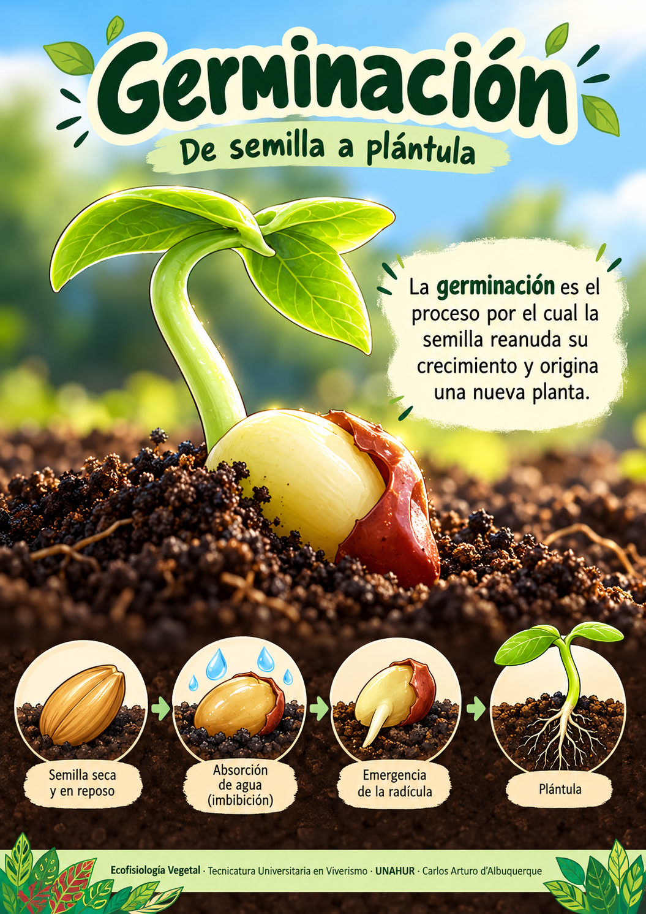

ECOFISIOLOGÍA VEGETAL · CLASE 09
Todo empieza
con una semilla. 🌱
Un mundo de posibilidades bajo la tierra. Descubrí cómo despiertan las semillas, qué necesitan para germinar y por qué a veces conviene esperar.
18 láminas originales · A tu ritmo · Para estudiar juntos

01 / ENTENDER
De semilla a plántula.
Elegí un tema. Conectá las ideas.
02 / EXPERIMENTAR
¿Está lista
para despertar?
Explorá la diferencia entre viabilidad, condiciones ambientales y dormición.
Modelo conceptual. Las necesidades de luz y otros estímulos dependen de la especie. No predice porcentajes ni tiempos.
CASO DE ESTUDIO · AMBROSIA TENUIFOLIA
¿Qué señal pesa más?
Compará los tratamientos de la lámina 016.
Lectura cualitativa de la figura: el eje representa densidad de plántulas, no porcentaje de germinación. «− RL» indica retirar rojo lejano, aumentando R/RL.
03 / RECORDAR
Hacé florecer lo que sabés.
TARJETAS DE MEMORIA
DESAFÍO DE REPASO
04 / VOLVER A LAS FUENTES
Tu colección de láminas.
Aprender también es crecer.
Volvé a los temas, conversalos con tus amigos y repetí el desafío cuando quieras.
Volver al repaso ↑